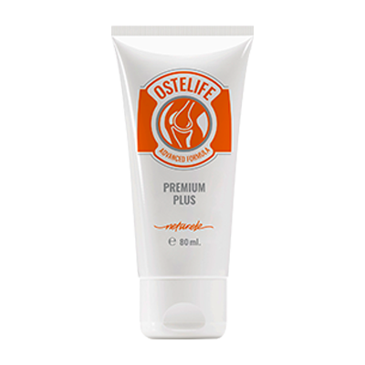

Професор Недялков:"Защо лекувате ставите години наред, когато те могат да бъдат възстановени след месец!"
За приноса на Професор Недялков: за лечението на ставни заболявания и как да получите с отстъпка препарат за възстановяване на ставите, прочетете статията:

През изследователски екип, ръководен от проф. Недялков проведе серия лабораторни тестове на иновативен препарат за стави.Резултатите надминаха всички очаквания.Сравнителен анализ на препарата,разработен от професор,с популярните аптечни продукти също не оставят съмнение - настъпва нова ера в ревматологията! Изследователите са подали документи за регистрация на лекарството и заявление за пускане в производство.Но тогава се случи нещастието - професор Недялков напусна този свят.Наистина ли е препарата няма да бъде пуснат? Нашият кореспондент зададе този въпрос на главния ревматолог на Министерството на здравеопазването Колю Стефанов Ценов, който също взе значително участие в изследванията на препарата.
Коментар от главния ревматолог Ценов.„Първият шок след загубата на професора премина,и се ангажирахме да завършим делото на живота му докрай. "
Репортер: "Здравей, Колю. Как днес нещата са с разработване на препарата? "
Ценов K.C.: Добър ден, Дамян.Радвам се да съобщя, че след всички тестове беше получено разрешение за въвеждане на препарата в медицинската система.Препарата ния го нарекохме Ostelife,тъй като основното активно вещество в него-рога на алтайския марал.
Клинични изпитвания Ostelife показа своята висока ефективност при ставно лечение според най-консервативните оценки, това лекарство ще удължи средния живот на хората със ставни заболявания поне 10 години!
Репортер:"Колю, бихте ли казали,как Ostelife се различава от обичайните аптечни продукти? "
Ценов K.C.: Да видим,до какви усложнения могат да доведат ставни заболявания. Ако вземете най-често срещаните ставни заболявания, тогава това:
| Заболяването | Ранни усложнения | Усложнения в напреднал стадий |
|---|---|---|
| Артрит | Хрущялна некроза, разрушаване на ставите, синовит | Пълно унищожаване на ставата, сепсис, рак на ставата |
| Артроза | Възпаление на хрущяла, структурни промени и разграждане на ставите, съществува риск от отравяне на кръвта | Увреждане (ставна недостатъчност), унищожаване на хрущяла, рак на ставата |
| Остеохондроза | Интервертебрална изпъкналост, изместване на междупрешленния диск, прищипване на нервите | Спинална херния, нарушения на ЦНС (централна нервна система), съществува риск от повреда на определени органи, рак на гръбначния стълб |
| Коксартроза | Костни израстъци, дегенеративни промени в хрущялите и ставите, дегенеративни промени в ставните торби | Ограничаване на двигателната активност (увреждане на 1 или 2 групи), ракови тумори |
| Остеопороза | Смърт на съединителната тъкан, костна некроза (увеличава чупливостта на костите) | Деформация на отделните кости и скелета като цяло, недостатъчност на крайниците, съществува риск от развитие на рак поради некроза на костите |
| Бурсит | Възпаление на периартикуларната синовиална торбичка, натрупване на гноен ексудат | Кръвно отравяне, ставна недостатъчност, гниеща мускулна тъкан, злокачествени тумори |
| Подагра | Възпаление на ставната става, отлагане на сол, концентрация в костната тъкан на пикочните кристали | Образуването на кост на крака и неговия растеж, промяна в размера на ставата, некроза на костната тъкан на стъпалото, поява на доброкачествени тумори |
Както виждате,ставни заболявания всъщност много често водят до сериозни усложнения,които са изпълнени с увреждане или смърт на пациента.През последните 100 години натоварването върху човешкия скелет непрекъснато нараства.В крайна сметка,Сега почти всеки човек на 25 години има поне 1-2 засегнати стави.До 35-40-годишна възраст болестите отдавна са преминали в стадий,върху които е възможно развитието на тежки усложнения.
За илюстративни цели,можете да разгледате тези снимки,произведени в болници:
1. Колянната става на човек с артроза, която се лекуваше с "класически" методи.Инжекциите известно време му даваха възможност да не чувства болка.Но те не попречиха на развитието на болестта. Резултатът беше ампутация на крака.Човека завинаги остана инвалид.

2. Последиците от остеохондрозата, която всъщност също не можеше да се лекува, бяха само анестезирани.Общо имаше 2 ракови тумора, в които хернията се превърна.Опитаха се да спасят пациента с операция, но за съжаление това не помогна, жената почина.
3. Последствия от артрит на ръката. Както сами разбирате, да направите нещо в ситуация, в която възпалителният процес вече е започнал и сепсисът е започнал,вече невъзможно.Ръката и част от ръката са ампутирани.Това обаче не го спаси, сепсисът вече се е разпространил в останалата част на тялото и мъжът почина след шест месеца интензивно лечение.

И сега нека върнем разговора в положителна посока.Професор Недялков, заедно с медицинските изследвания в продължение на десетилетия, изучава алтернативната медицина, в частност сибирските тайни на дълголетието и здравето.Всички познания и опит на професора от научноизследователските институти бяха комбинирани в нашият препарат - Ostelife. Естествените компоненти и екстракти, които съдържа Ostelife, се оказаха способни да осигурят КЛЮЧОВИЯ ФАКТОР за лечение - пълно кръвоснабдяване на засегнатата става . Просто трябва да осигурите възстановяването на кръвоснабдяването, за да спрете некрозата и възпалението, като същевременно стартирате процеса на регенерация.Проблемът е, че звучи лесно, но на практика досега не е получена нито една от съществуващите възможности за лечение.Сега такова лекарство съществува и освен това, след приключване на клиничните изпитвания, то се разпространява с отстъпка като част от специална програма.
Преди да бъде избрано лекарството за разпространение по програмата, бяха проведени мащабни клинични изпитвания.В тях взеха участие общо 10 120 души от различни възрастови групи и с различни заболявания на ставите. 93,8% напълно излекуват заболяванията си.5.6% все още имаха някои проблеми, но като цяло състоянието им значително се подобри.Грубо казано, ако някой има тежка форма на артрит и трудно може да ходи, то след като завърши курса, той имаше само периодични леки болки в ставата.И само при 0.6, подобрението беше, макар и значително, но недостатъчно, за да ги придаде на пълно възстановяване.
Кореспондент: "Чух правилно? Наистина ли разпространявате това чудо-препарат с отстъпка?"
Ценов K.C.: Да, това е вярно.В памет на професор Недялков организирахме фонд, кръстен на него, получихме държавно финансиране и стартирахме съвместна лечебна програма.Програмата отдели 324 милиона от държавата и 27 милиона от търговските фондове на Научноизследователския институт по ревматология.Ето защо имаме възможност да разпространяваме Ostelife с отстъпка. И да - наистина работи.Аз лично контролирах клиничните изпитвания и мога да ви потвърдя, че препарата е изключително ефективен.
Искам да покажа резултатите от клиничните изпитвания на лекарството Ostelife. Те приятно изненадаха много лекари. За онези пациенти, чиито стави често болят, ще бъде истинско спасение:За онези пациенти, чиито стави често болят, ще бъде истинско спасение:

Болката изчезна за кратък период при 100% от участниците в изследването

Възстановяване на хрущяла след Ostelife - при 98% от участниците в изследването

93% от участниците в проучването се отърват от артрит и артроза след завършване на курса
А това са снимки на ставите „преди” и „след” употребата на лекарството “Ostelife”
Кореспондент: "Впечатляващо. Просто ни обяснете какво означава за обикновените хора със ставни заболявания?"
Ценов K.C.: Това означава, че съвременната медицина е направила голям пробив и можете да излекувате болестите си у дома за един до два месеца.Ostelife не замръзва, не анестезира, "рестартира" тялото на клетъчно ниво.Елиминира причината за самата болка и връща ставите, гръбначния стълб в първоначалното си, нормално състояние.Пациентът не просто се отърва от симптомите, но премахва корена на заболяването - отслабен от бавни, стари клетки, кръвоснабдяването на хрущяла.
На първия ден Ostelife пуска системи за регенерация на тялото. Е, спира синдрома на болката, веднага ще го усетите. След 1,5 месеца лечението ще приключи.
Кореспондент: "Ostelife помага само при някакви специфични заболявания?"
Ценов K.C.: Не, казвам ви: действа на клетъчно ниво,възстановяване на кръвоснабдяването.Лекува всяка болест, свързана със ставите и гръбначния стълб: артроза и артрит, остеопороза, ревматизъм, подагра и ишиас, радикулит и остеохондроза, изместване на гръбначните дискове.Всякакви заболявания на ставите на всеки етап.
Кореспондент: "И какво, лекарството наистина избавлява всички тези заболявания, а не само премахва болката?"
Ценов K.C.: Ostelife и елиминира болките в ставите (в началните етапи на лечението) и напълно елиминира заболяването.Разбира се, има и други възможности за лечение на заболявания, но като правило всички те са свързани с хирургическа интервенция и са много опасни за хората. Да не говорим за факта, че цената на операцията на същата колянна става сега просто се преобръща и може да си позволи много малък брой хора.

Реален сертификат
Кореспондент: "Как хората могат да получат Ostelife чрез програмата с отстъпка? Може ли някой да направи това?"
Ценов K.C.: Да, абсолютно всякакви.Има само едно "но"-с оглед на малкия обем продукция програмата работи селективно. Всички, които се нуждаят, могат да получат Ostelife с отстъпка при поръчка на курс. Всё что требуется -Оставете вашето име и телефонен номер, на който служителите на консултативния център по програмата могат да се свържат с вас.
Кореспондент: "В какъв период от време ще работи програмата?"
Ценов K.C.: Крайният срок за програмата е (включително). До тази дата трябва да оставите заявка за Ostelife. Ако все още не сте го направили, съветвам ви да побързате, тъй като тогава ще бъде невъзможно да получите лекарството с отстъпка. Аз лично гарантирам, че всички заявки, подадени преди това време, ще бъдат обработени и хората ще получат препарата.
Колю, благодаря за интервюто!.Може би искате да кажете нещо на нашите читатели, преди да се сбогуваме? "
Ценов K.C.: Да, разбира се. Искам да насоча вниманието на читателите, че болестите на гърба и ставите стават все по-млади и дори лека периодична болка е повод да насоча вниманието към проблема. Лекарят няма да ви убеди да се лекувате. Както се казва, спасението на давещите се е дело на самите удавници.
И помнете: болестите, причинени от болка в гърба и ставите, не носят просто дискомфорт. Те съкращават живота с 15-20 години.
Пазете се от фалшификати! Оригиналния „Ostelife”по програма се предлага изключително на ОФИЦИАЛЕН САЙТ
Припомняме, че програмата е валидна само до включително.
Харесва ли ви статията? Споделете с приятелите си!


С уважение, Ценов K.C.


С уважение, Ценов K.C.
С уважение, Ценов K.C.


Има отлични условия, побързайте!
Купих го на официалния сайт, те се обадиха много бързо и потвърдиха поръчката.Искам най-накрая да хода без болки в гърба и да се наслаждавам на ходене )


С уважение, Ценов K.C.

С уважение, Ценов K.C.


И се пазете от фалшификати, моля.
С уважение, Ценов K.C.

Започна проверка на злоупотребата със здравна система.

Г. Боянова: "Като новият директор на аптечната верига, обещавам, че ще работим честно".

Пациент с артрит трябваше да ампутират крака

100 244 души загубиха пръсти поради възпалени стави

Каква е сложността на операцията на коляното